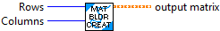
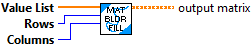

Creates a new matrix with the given dimensions.
Inputs:
- Rows -- Number of rows in the matrix
- Columns -- Number of columns in the matrix
Outputs:
- Output Matrix -- The resulting matrix. All values are zero.

Fills the matrix with the given data, encoded in row major form. (The matrix is filled row by row, left to right with the given data).
Inputs:
- Value List -- Array of values used to fill the matrix
- Rows -- The number of rows in the resulting matrix
- Columns -- The number of columns in the resulting matrix
Output:
- Output Matrix -- The resulting filled matrix.